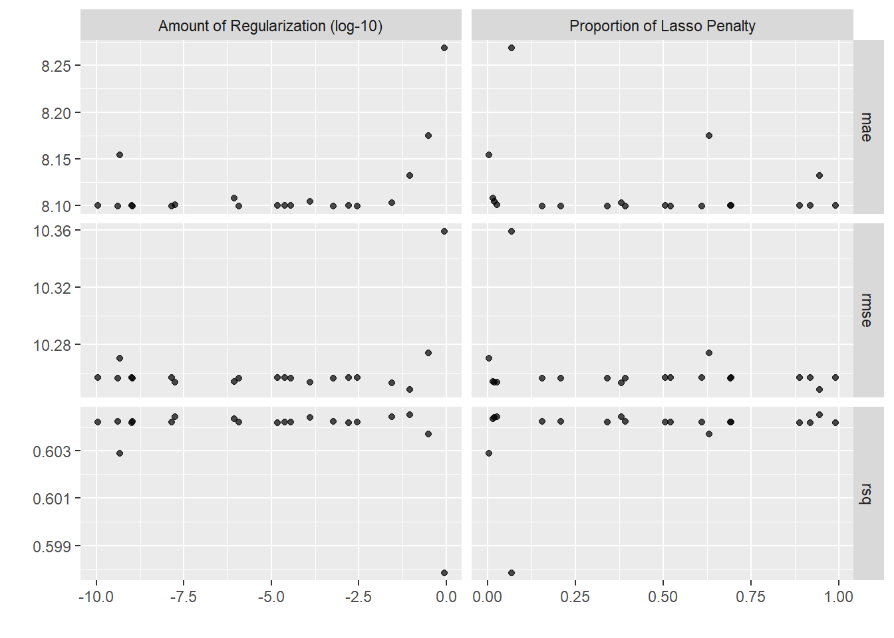

A generalized linear model (GLM) was built to predict the compressive strength of high-performance concrete formulations.
An elastic net regularization has been employed to develop the generalized linear model using the glmnet engine within the tidymodels framework. These results will be compared with a conventional materials modeling approach in the next post.
##Load libraries and data
library(readxl)
library(tidyverse)
#Tidymodels
library(tidymodels)
library(vip)filename <- "Concrete_Data.xls"
folder <- "../data/"
numberCols <- 9 #total number of columns in spreadsheet
colTypes <- rep("numeric", numberCols)
concrete_tbl <- read_excel(path = paste0(folder, filename), col_types = colTypes)
concrete_tbl <- concrete_tbl %>%
rename(cement = starts_with("Cement")) %>%
rename(blast_furnace_slag = starts_with("Blast")) %>%
rename(fly_ash = starts_with("Fly Ash")) %>%
rename(water = starts_with("Water")) %>%
rename(superplasticizer = starts_with("Super")) %>%
rename(coarse_aggregate = starts_with("Coarse")) %>%
rename(fine_aggregate = starts_with("Fine")) %>%
rename(age = starts_with("Age")) %>%
rename(compressive_strength = starts_with("Concrete"))3-Stage Machine Learning Approach
We will utilize the 3-stage machine learning approach promoted by Matt Dancho at Business Science. He posted an excellent tutorial “Product Price Prediction: A Tidy Hyperparameter Tuning and Cross Validation Tutorial”. I haven’t found a better example of applying the tidymodels framework to develop a predictive model.
The 3-stage hyperparameter tuning process:
1. Find Parameters: Use hyperparameter tuning on a “training dataset” that sections your training data into cross validation folds. The output of stage 1 is the parameter set.
2. Compare and Select the Best Model: Evaluate the performance on a hidden “test dataset”. The output at Stage 2 is what we determined as the best model.
3. Train Final Model: Once we have selected the best model, we train the full dataset. This model goes into production.
Stage 1: Find Parameters
Here we want to make different machine learning models and try them out by performing the following steps: - Initial Splitting: Separate into random training and test datasets - Preprocessing: Make a pipeline to transform raw data into a dataset ready for machine learning - Cross Validation Specification: Sample the training data into splits - Model Specification: Select model algorithms and identify key tuning parameters - Grid Specification: Set up a grid using wise parameter choices - Hyperparameter Tuning: Implement the tuning process
Initial splitting of the dataset into Training and Test Dataset Here we use the rsample package to create an 80/20 split. The concrete dataset contains 1030 formulations of which 825 are randomly assigned to training and 205 are randomly assigned to testing.
set.seed(123)
concrete_split <- initial_split(concrete_tbl, prop = 0.80)
concrete_train <- training(concrete_split)
concrete_test <- testing(concrete_split)Preprocessing is accomplished by using the recipe package. The recipe provides the steps required to transform our raw data into a dataset suitable for machine learning. The Concrete dataset actually doesn’t require much reformatting. The major issue was the lengthy column names which was addressed immediately after the dataset was imported. The dataset contained all numerical values and no missing data. Initially we will just center and scale the predictors before sending to the glmnet model.
concrete_rec <- recipe(compressive_strength ~ ., data = concrete_train) %>%
step_center(all_predictors()) %>%
step_scale(all_predictors())
concrete_recRecipe
Inputs:
role #variables
outcome 1
predictor 8
Operations:
Centering for all_predictors()
Scaling for all_predictors()Cross validation folds are created in order to assess the performance of the model parameters. Here we use 5-fold cross validation to create splits from our training dataset and also using the preprocessing pipeline specified above.
set.seed(234)
concrete_folds <- vfold_cv(concrete_train, v = 5)
concrete_folds# 5-fold cross-validation
# A tibble: 5 × 2
splits id
<list> <chr>
1 <split [659/165]> Fold1
2 <split [659/165]> Fold2
3 <split [659/165]> Fold3
4 <split [659/165]> Fold4
5 <split [660/164]> Fold5Model specifications are created using the parsnip package. Here we specify a linear regression model using the glmnet engine. glmnet uses an Elastic Net which combines LASSO and Ridge Regression techniques. This is a linear algorithm which may have difficulty with the skewed numeric data which is present in the Concrete dataset. Notice that the penalty and mixture parameters have been specified to be tuned.
glmnet_spec <- linear_reg(
penalty = tune(),
mixture = tune()
) %>%
set_engine("glmnet") %>%
set_mode("regression")
glmnet_specLinear Regression Model Specification (regression)
Main Arguments:
penalty = tune()
mixture = tune()
Computational engine: glmnet Grid specifications sets up a variety of parameter values used with our model to find which combination yields the lowest prediction error (or best accuracy). Here we specify the parameter ranges and grid function using the dials package.
Specify the grid function (max entropy, hypercube etc.). Here we make a grid of 20 values using the grid_max_entropy() function in the dials package. Since there are just 2 tuning parameters in this case, we can visualize the grid selections. Note the penalty parameter is on the log base 10 scale by default. The dials package helps us make smarter choices for the critical tuning parameters.
set.seed(345)
glmnet_grid <- grid_max_entropy(penalty(), mixture(), size = 20)
glmnet_grid %>%
ggplot(aes(penalty, mixture)) +
geom_point(color = "steelblue", size = 3) +
scale_x_log10() +
theme_light() +
labs(title = "Max Entropy Grid", x = "Penalty (log scale)", y = "Mixture")concrete_wf <- workflow() %>%
add_recipe(concrete_rec) %>%
add_model(glmnet_spec)Hyperparameter tuning is now performed using the tune_grid() function from the tune package. Here we specific the formula, model, resamples, grid and metrics. The metrics come from the yardstick package. For regression problems, we can specify multiple metrics such as mae, mape, rmse and rsq into a metric_set().
doParallel::registerDoParallel()
glmnet_res <- tune_grid(
concrete_wf,
resamples = concrete_folds,
grid = glmnet_grid,
metrics = metric_set(rmse, rsq, mae),
control = control_grid(save_pred = TRUE)
)Identify the best hyperparameter values using the show_best() function.
glmnet_res %>% show_best("mae", n = 5)# A tibble: 5 × 8
penalty mixture .metric .estimator mean n std_err .config
<dbl> <dbl> <chr> <chr> <dbl> <int> <dbl> <chr>
1 1.09e- 9 0.155 mae standard 8.10 5 0.216 Preprocessor1_Model06
2 5.89e- 4 0.208 mae standard 8.10 5 0.216 Preprocessor1_Model07
3 4.05e-10 0.392 mae standard 8.10 5 0.216 Preprocessor1_Model10
4 1.16e- 6 0.340 mae standard 8.10 5 0.216 Preprocessor1_Model08
5 1.41e- 8 0.520 mae standard 8.10 5 0.216 Preprocessor1_Model12Visualize the tuning results

Stage 2: Compare and Select the Best Model
Select the best parameters based on the lowest mean absolute error.
params_glmnet_best <- glmnet_res %>% select_best("mae")
params_glmnet_best# A tibble: 1 × 3
penalty mixture .config
<dbl> <dbl> <chr>
1 0.00000000109 0.155 Preprocessor1_Model06Finalize the model with the best parameters.
final_glmnet <- finalize_workflow(concrete_wf, params_glmnet_best)
final_glmnet══ Workflow ════════════════════════════════════════════════════════════════════
Preprocessor: Recipe
Model: linear_reg()
── Preprocessor ────────────────────────────────────────────────────────────────
2 Recipe Steps
• step_center()
• step_scale()
── Model ───────────────────────────────────────────────────────────────────────
Linear Regression Model Specification (regression)
Main Arguments:
penalty = 1.09262294094878e-09
mixture = 0.155459027038887
Computational engine: glmnet Which Features are most important?
final_glmnet %>%
fit(data = concrete_train) %>%
pull_workflow_fit() %>%
vip(aesthetics = list(fill = "steelblue")) +
labs(title = "GLMNET Model Importance - Compressive Strength (MPa) Prediction")Warning: `pull_workflow_fit()` was deprecated in workflows 0.2.3.
Please use `extract_fit_parsnip()` instead.Stage 3: Train Final Model
Fit model on train and evaluate on test.
final_res <- last_fit(final_glmnet, concrete_split, metrics = metric_set(rmse, rsq, mae))Assess final model performance metrics.
collect_metrics(final_res)# A tibble: 3 × 4
.metric .estimator .estimate .config
<chr> <chr> <dbl> <chr>
1 rmse standard 11.4 Preprocessor1_Model1
2 rsq standard 0.615 Preprocessor1_Model1
3 mae standard 9.09 Preprocessor1_Model1Visualize actual vs. predicted compressive strength for final model.
Summary
The regularized linear model had relatively poor predictive performance (RMSE = 11.4 MPa, R2 = 0.62). A non-linear, least squares model will be built with better model performance in the next post.
─ Session info ───────────────────────────────────────────────────────────────
setting value
version R version 4.2.0 (2022-04-22 ucrt)
os Windows 10 x64 (build 19043)
system x86_64, mingw32
ui RTerm
language (EN)
collate English_United States.utf8
ctype English_United States.utf8
tz America/Chicago
date 2022-09-02
pandoc 2.18 @ C:/Program Files/RStudio/bin/quarto/bin/tools/ (via rmarkdown)
quarto 1.0.36 @ C:\\PROGRA~1\\RStudio\\bin\\quarto\\bin\\quarto.cmd
─ Packages ───────────────────────────────────────────────────────────────────
! package * version date (UTC) lib source
P broom * 1.0.1 2022-08-29 [?] CRAN (R 4.2.1)
P dials * 1.0.0 2022-06-14 [?] CRAN (R 4.2.1)
P dplyr * 1.0.10 2022-09-01 [?] CRAN (R 4.2.0)
P forcats * 0.5.2 2022-08-19 [?] CRAN (R 4.2.1)
P ggplot2 * 3.3.6 2022-05-03 [?] CRAN (R 4.2.1)
P glmnet * 4.1-1 2021-02-21 [?] CRAN (R 4.0.5)
P infer * 1.0.3 2022-08-22 [?] CRAN (R 4.2.1)
P Matrix * 1.4-1 2022-03-23 [?] CRAN (R 4.2.0)
P modeldata * 1.0.0 2022-07-01 [?] CRAN (R 4.2.1)
P parsnip * 1.0.0 2022-06-16 [?] CRAN (R 4.2.1)
P purrr * 0.3.4 2020-04-17 [?] CRAN (R 4.2.1)
P readr * 2.1.2 2022-01-30 [?] CRAN (R 4.2.1)
P readxl * 1.4.1 2022-08-17 [?] CRAN (R 4.2.1)
P recipes * 1.0.1 2022-07-07 [?] CRAN (R 4.2.1)
P rsample * 1.0.0 2022-06-24 [?] CRAN (R 4.2.1)
P scales * 1.2.1 2022-08-20 [?] CRAN (R 4.2.1)
P sessioninfo * 1.2.2 2021-12-06 [?] CRAN (R 4.2.1)
P stringr * 1.4.1 2022-08-20 [?] CRAN (R 4.2.1)
P tibble * 3.1.8 2022-07-22 [?] CRAN (R 4.2.1)
P tidymodels * 1.0.0 2022-07-13 [?] CRAN (R 4.2.1)
P tidyr * 1.2.0 2022-02-01 [?] CRAN (R 4.2.1)
P tidyverse * 1.3.2 2022-07-18 [?] CRAN (R 4.2.1)
P tune * 1.0.0 2022-07-07 [?] CRAN (R 4.2.1)
P vip * 0.3.2 2020-12-17 [?] CRAN (R 4.0.5)
P workflows * 1.0.0 2022-07-05 [?] CRAN (R 4.2.1)
P workflowsets * 1.0.0 2022-07-12 [?] CRAN (R 4.2.1)
P yardstick * 1.0.0 2022-06-06 [?] CRAN (R 4.2.1)
[1] C:/Users/David Zoller/AppData/Local/Temp/Rtmpuo7gRW/renv-library-30a47499110a
[2] C:/Users/David Zoller/Documents/datadavidz.github.io/renv/library/R-4.2/x86_64-w64-mingw32
[3] C:/Program Files/R/R-4.2.0/library
P ── Loaded and on-disk path mismatch.
──────────────────────────────────────────────────────────────────────────────